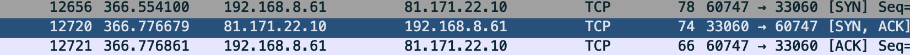
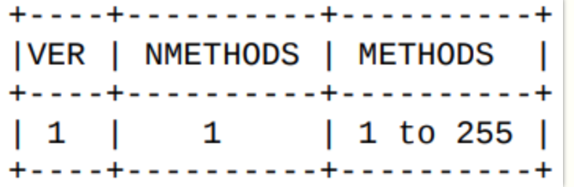
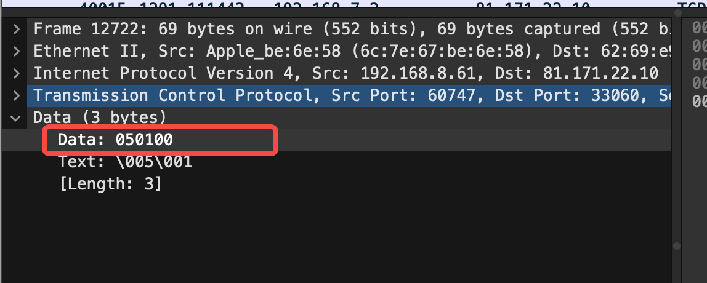
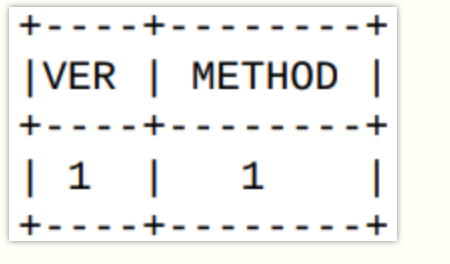
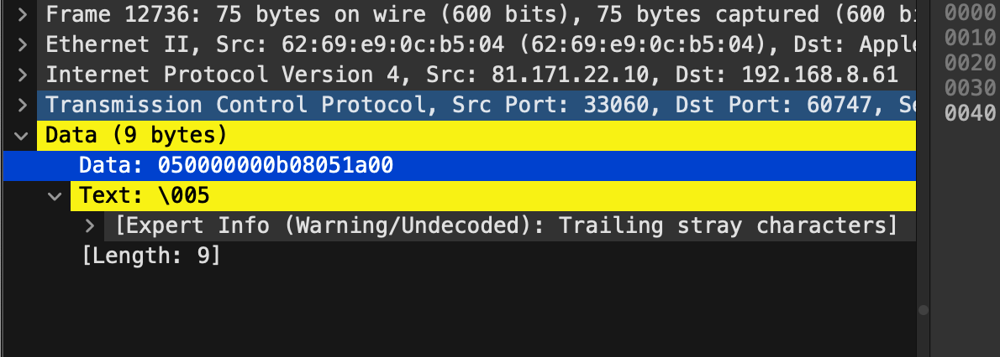
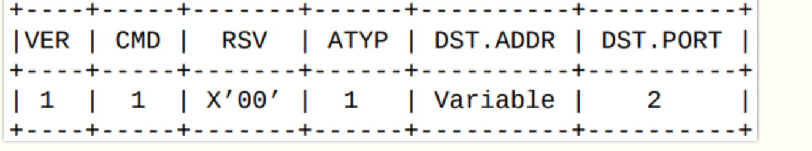
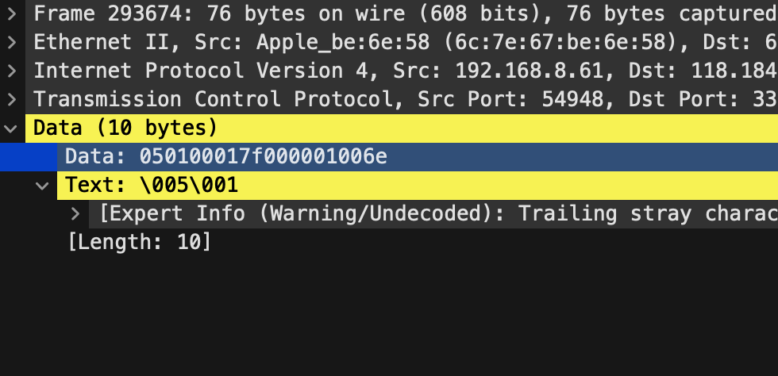
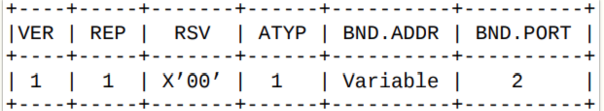
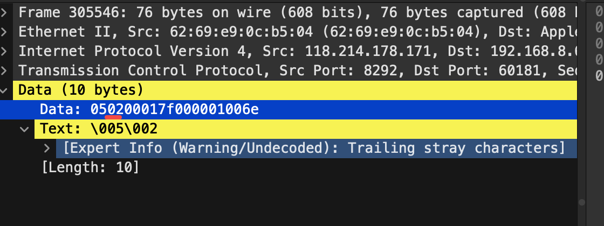

socks5
目录
判断socks5链接可用性
curl法
curl --socks5 你的代理IP:端口号 https://www.example.com
原始方法
数据包分析
ref：抓包分析：https://zgao.top/奇安信实习五-socks5协议抓包分析/ https://www.quarkay.com/code/383/socks5-protocol-rfc-chinese-traslationhttps://samsclass.info/122/proj/how-socks5-works.html
渗透的时候，扫描扫到了一批socks5链接。 想验证他们的可用性时，遇到了如下问题
socks5 链接是否真的是socks5？
socks5 链接能通哪些网络（公网？10段？172段？）
socks5 是否需要密码？
于是打算通过数据包分析来好好验证socks5的可用性
抓包分析：TCP三次握手

在开始socks5之前，会进行三次握手
抓包分析：client，请求认证

VER （版本）字段在此版本中设置为 X’05‘ NMETHODS （方法数目）字段包含了 METHODS （方法列表）中所包含的方法识别码的个数。 METHODS如下表
X’00‘ 无需认证
X’01‘ GSSAPI
X’02‘ 用户名/密码
X’03‘ 到 X’7F’ IANA 指定
X’80‘ 到 X’FE’ 为私有方法保留
X’FF‘ 无可接受方法
如下便是 方法数目为1，且方法为 无需认证（00）的client请求认证包

抓包分析：server，响应认证

VER （版本）字段在此版本中设置为 X’05‘ METHOD表示从请求认证中，选择一个方法作为认证（如果 METHOD （方法）字段为 X’FF‘， 表示方法列表中的所有方法均不可用，客户端收到此信息必须关闭连接。）

0500表示接受client的无需认证的认证请求，0500后面的是填充padding，不管。
抓包分析：client，发送地址请求

VER 协议版本： X‘05’
CMD 命令
CONNECT 连接， X‘01’
BIND 监听X‘02’
UDP ASSOCIATE UDP关联 X‘03’
RSV 保留字段
ATYP 地址类型
IPV4 X‘01’
域名 X‘03’
IPV6 X‘04’
DST.ADDR 目标地址
DST.PORT 目标端口 （网络字节序）
抓到的包

05:ver 01:CMD→connect 00: 保留 01: 地址类型 IPV4 17f000001: 要代理的地址（我这里请求的是127.0.0.1） 006e ：要代理的地址的端口（我这里请求的是110，6e的转10进制就是110）
抓包分析：server，响应地址请求

VER协议版本： X‘05’
REP 回复字段（回复类型）：
X‘00’ 成功
X‘01’ 常规 SOCKS 服务故障
X‘02’ 规则不允许的连接
X‘03’ 网络不可达
X‘04’ 主机无法访问
X‘05’ 拒绝连接
X‘06’ 连接超时
X‘07’ 不支持的命令
X‘08’ 不支持的地址类型
X‘09’ 到 X’FF’ 未定义
RSV 保留字段
ATYP 地址类型
IPV4 X‘01’
域名 X‘03’
IPV6 X‘04’
BND.ADDR 服务端绑定地址
BND.PORT 服务端绑定端口 （网络字节序）

比如我抓的这个包就是规则不允许
抓包分析总结
tcp三次握手→认证阶段→地址请求
脚本编写
我们可以这样制定socks5可用性检测的思路：
三次握手失败->无效
向server发送请求认证，请求00（无需认证0）和02（用户名密码认证）
server返回0xff ->无效
返回00->有戏
返回02->放到一边，待会来爆密码
向请求认证过程中返回00的server发送地址认证，请求一个socks5可能访问得到的ip:port
返回00->socks5可用性检测通过
返回02-06:可能是socks5无法访问这个ip：port，换成别的试试（批量跑一波内网）
返回其它：大概率没戏，不用看了
随手写的检测脚本
import requests
import concurrent.futures
import socket
from urllib.parse import urlparse
def check_proxy(proxy):
urls = ["http://127.0.0.1:110"]
for url in urls:
try:
response = requests.get(url, proxies={"http": proxy, "https": proxy}, timeout=5)
print(f"Proxy {proxy} is working for {url}")
except requests.exceptions.RequestException as E:
print(f"{proxy}:{E}")
def socket_check(proxy):
# 创建一个socket对象
proxy_parse = urlparse(proxy)
host = proxy_parse.hostname
port = proxy_parse.port
sock = socket.socket(socket.AF_INET, socket.SOCK_STREAM)
sock.settimeout(5)
# 连接到SOCKS5代理服务器
sock.connect((host,port))
# 发送认证请求
sock.sendall(b"\x05\x02\x00\x02")
# 读取代理服务器的响应
data = sock.recv(2)
# 判断是否无需认证
if len(data) == 2 and data[0] == 0x05 and data[1] == 0x00:
print(f"{proxy}:无需认证")
l00.append(proxy)
elif len(data) == 2 and data[0] == 0x05 and data[1] == 0x02:
print(f"{proxy}:需要认证")
l02.append(proxy)
elif len(data) == 2 and data[0] == 0x05 and data[1] == 0xff:
print(f"{proxy}:代理存在但是不接受")
lff.append(proxy)
else:
print(f"{proxy} 不是socks5")
nop.append(proxy)
with open('socks5_verify.txt', 'r') as file:
l00=[]
l02=[]
lff=[]
nop=[]
#with concurrent.futures.ThreadPoolExecutor() as executor:
# executor.map(socket_check, file)
#for i in file:
# socket_check(i)
print(f"无需认证：:{l00}")
print(f"需要密码:{l02}")
print(f"socks5代理存在，但是验证方式不允许:{lff}")
print(f"非socks5代理:{nop}")
for proxy in l00:
check_proxy(proxy)
然后把无需认证的socks5拿到fscan设置代理，跑跑内网，兴许有奇迹
10.0.0.0/8 172.16.0.0/12 192.168.0.0/16